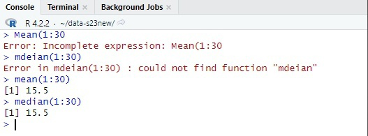
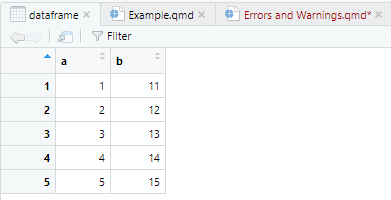
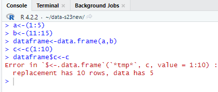
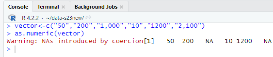

Errors, Warnings and Messages in R
This guide is intended to introduce you to the different types of notices you will encounter while working in R.
Why errors in R are so stressful?
These days we interact with computers mainly using graphical interfaces. The most challenging thing about R is that it is different from our everyday experience because it has a command-line interface. Thus, precise formulation of commands is a key thing for making R work as you want. In practice and especially at the very beginning, people make a lot of small typos and big mistakes while learning a new programming language. The good thing is that R is always there to let you know that you made a certain mistake. The bad thing is that most of the time the program simply indicates the presence of an error, but doesn’t help to solve it. This brings despair and anxiety. Our task is to learn how to take the most from R notices to debug our code and keep calm.
Different types of notices
R has three ways of communicating its concerns:
- Errors
- Warnings
- Messages
Errors
Error messages appear when the execution of a certain function is terminated. R sees no possibility to continue with this input. There are two main reasons for this: syntax errors and semantic errors. The most intuitive examples of a syntax errors are an unmatched parenthesis or a brace, and spelling mistakes in the name of a function.

You can see an illustration of both above. Without the closing parenthesis, R perceives an expression as being incomplete. Note that error messages have red color and start with “Error:”. The second error message in the picture above is straightforward: R knows that you want to apply some function, but can’t find it, and we know it is due to the typo in the name(mdeian instead of median).
Semantic errors occur when the syntax of the code is correct, but it implies an impossible action. Imagine you created a data frame which has 5 rows.

After that, you decided to add another column to this data frame. However, you do not notice that it has 11 rows. Even if you correctly asked R to attach this column, you would not see the result. Instead, you would get an error: replacement has [x] rows, data has [y].

It is important to understand that for us humans this action has more sense: we could imagine a table with one column which is bigger than others. For R this input sounds the same way as “how heavy is a red color?” for you, so it makes little sense. Another thing to notice: after the error message in the console you can see a greater-than sign: >. Every code line in console starts with it. If it appears in the next line you know that R has stopped executing previous line.
Warnings
Warnings messages appear when R wants to warn you about the potential problems with the results of the execution of some function. The difference with errors is that in this case, you get a particular result, but R suspects that you are going to be dissatisfied with it. For example, imagine you created a vector of numbers and decided to convert it into a numeric class. If numbers in your vector are written properly, you will get a numeric vector. But if some of them do not, what happens then? R would automatically replace non-properly written numbers such as “1,000” or “2,500” with “NA”. You made a syntax error using a comma as a separator without letting R know (see more details about debugging in Statistic Globe). However, R would not terminate the process of converting, but rather send a warning message: “NA’s introduced by coercion”.

It might be the case that it was your plan from the very beginning, so you can ignore this message. If not, use it as a sign that some debugging is needed here.
Messages
The last type is messages. They are mainly used to draw your attention to some execution results which might be less intuitive. They are designed by people who write functions and packages to make them more usable and easy in terms of diagnostics.
You got an error message: tips that might help
Below you can find the list of sources which contain the most popular errors and warning messages in R. It can be useful to familiarize yourself with them and even try to replicate some by yourself. However, it is really hard to learn every error message so that non of them would come to you as a surprise. The good thing is that you don’t really need to. R is the most popular programming language for statistics which has a great community. On open platforms such as Stack Overflow, you may find the errors and problems you faced being already discussed. We have several pieces of advice regarding this. First, you can copy and paste the keywords from your error message directly to Google or another search engine. Second, better use the English language rather than your native language to search for solutions to the problems you face, because you would find much more information available. Also, never hesitate to contact us using GitHub Discussions. Each error and warning is a good possibility to learn something about using R properly, so it is not a time loss when you search for solutions.
Sources which contain the most popular errors and warnings:
Handling Errors & Warnings in R | List of Typical Messages & How to Solve: Statistics Globe
Common Errors in R, Chapter 46: Community Contribution